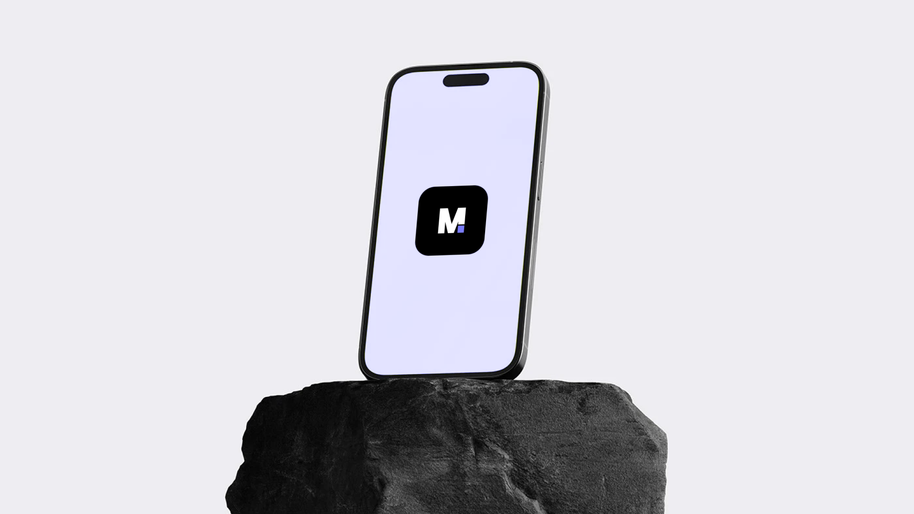
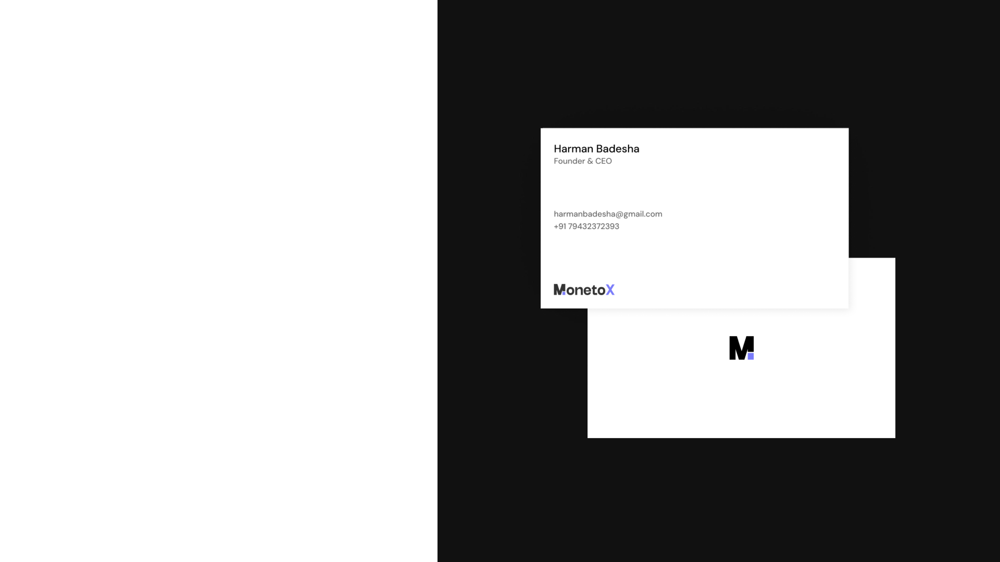
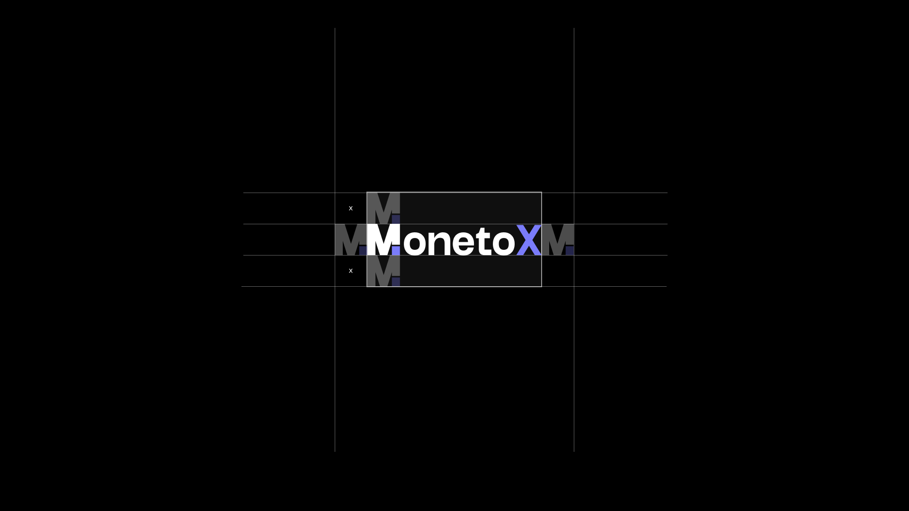
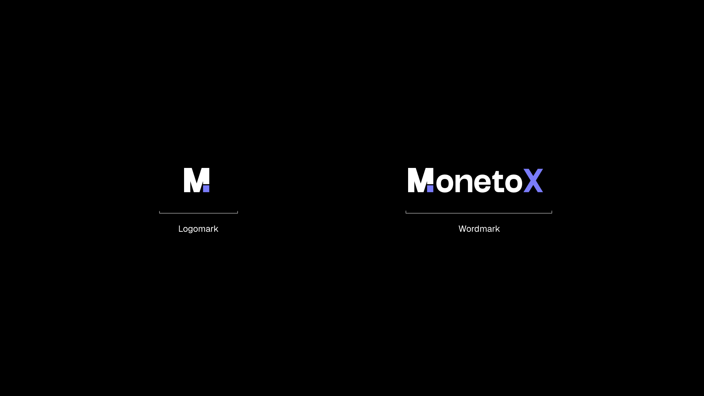
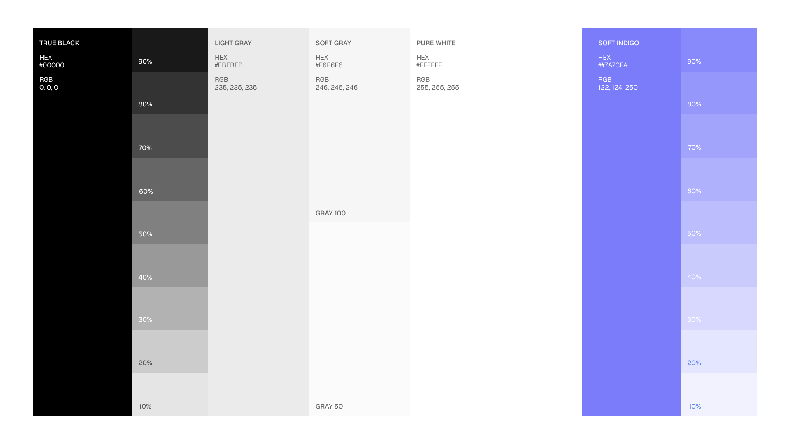
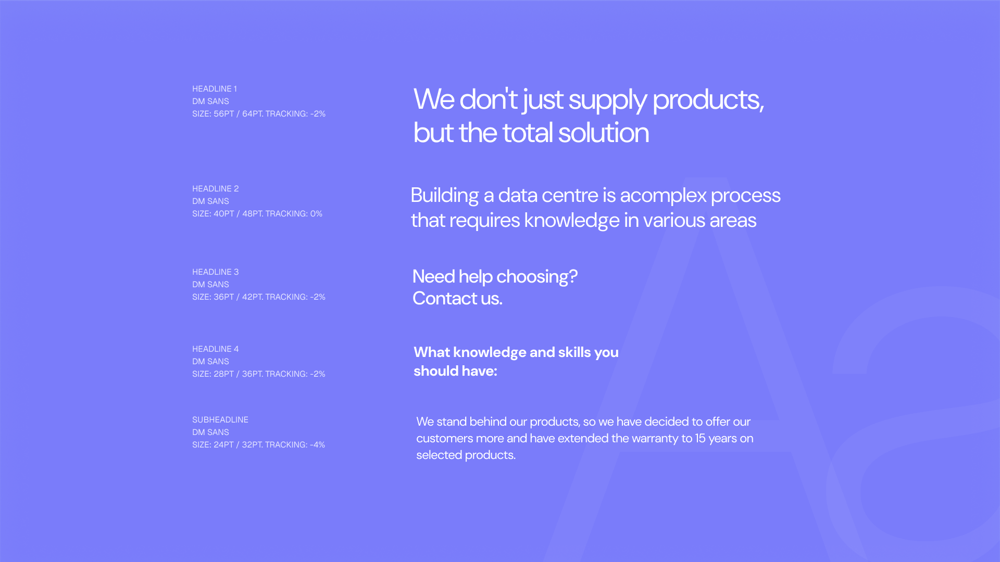
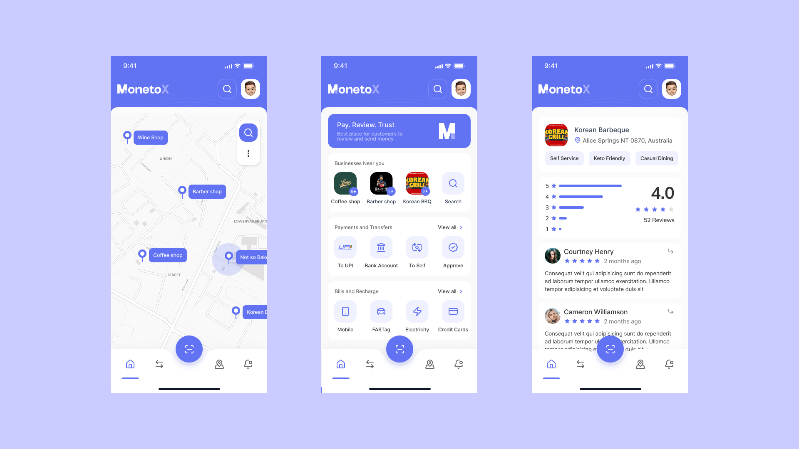
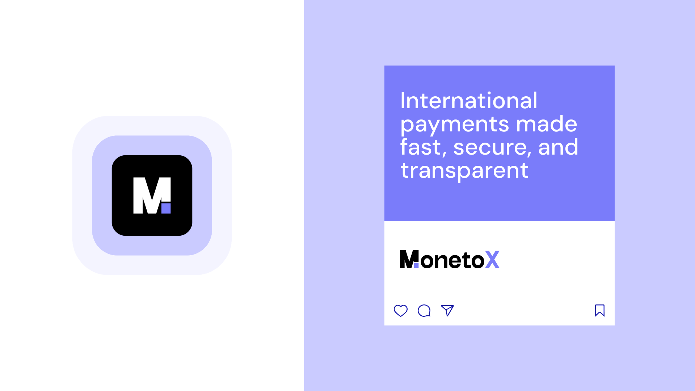

Designing a modern payment identity focused on clarity, trust, and effortless digital transactions.
MonetoX is a conceptual fintech brand built around the idea of making international payments feel simple, fast, and human. The goal was to create a visual identity that feels modern without relying on overly complex financial aesthetics.
The Challenge
Most fintech products either feel too corporate or overly playful.
The challenge was to build a visual system that balances trust, accessibility, and modern digital simplicity.
The identity needed to:
- Feel secure without looking outdated
- Work across both mobile and physical touchpoints
- Maintain strong recognition in small digital environments
- Scale consistently across product and marketing experiences
Brand Strategy
The visual direction was built around three core ideas:

-
Simplicity - Interfaces and branding elements were intentionally minimal to reduce cognitive friction.
-
Trust - Structured layouts, geometric forms, and restrained typography helped create a stable and reliable presence.
-
Motion - Soft gradients and high-contrast elements introduced a sense of speed and modernity associated with digital payments.
Logo System
The MonetoX identity combines a bold geometric monogram with a clean wordmark system.
The symbol was designed to remain recognizable even at very small sizes, making it suitable for app icons, favicons, and compact UI environments.
A structured grid system was used to refine proportions and maintain visual consistency across all variations.


Visual Language
A soft violet primary color was chosen to differentiate the brand from traditional blue-heavy fintech products while still maintaining a sense of reliability.
The monochromatic system allows the identity to feel modern, lightweight, and digitally native.
Typography focuses on clarity and spacing, prioritizing readability across both mobile and large-scale applications.


Product Experience
The interface system was designed with accessibility and simplicity in mind.
Large spacing, clear hierarchy, and minimal visual noise help users focus on actions rather than decoration.
The identity seamlessly extends into the product experience through consistent color usage, iconography, and interaction patterns.

Brand Applications
To ensure flexibility, the identity was tested across multiple real-world touchpoints including stationery, signage, wearable elements, and marketing assets.
The system maintains consistency across both physical and digital formats while preserving strong brand recognition.

Final Thoughts
MonetoX explores how modern fintech branding can feel both functional and emotionally engaging.
The project focused on building a scalable identity system that feels clean, fast, and approachable while remaining adaptable across future product experiences.